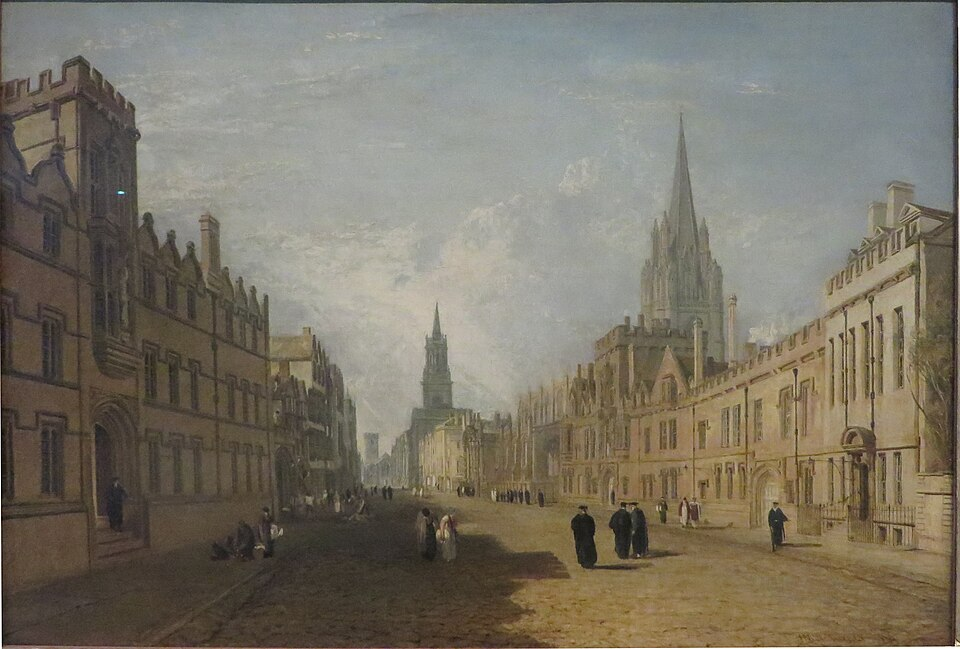
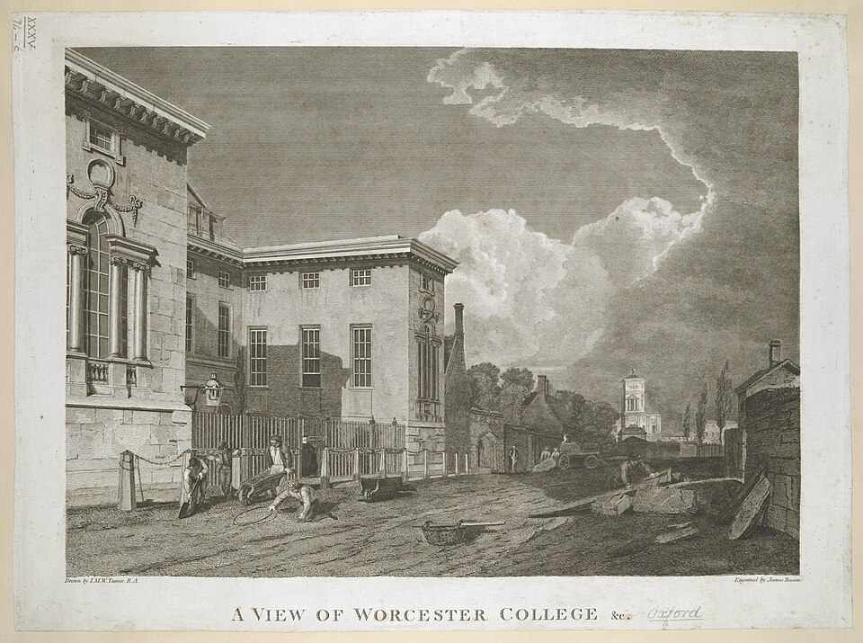
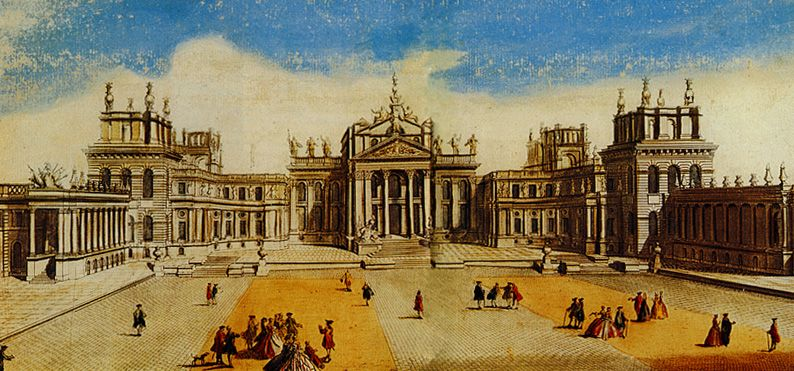

Оксфорд у Декстера — не открыточный город шпилей, а рабочий: с Северным Оксфордом донов, рабочим Джерико у канала, пригородами и автобусными остановками. Ниже — как город выглядел задолго до Морса, на картинах и гравюрах, которые давно перешли в общественное достояние, и как выглядят места романов сейчас.
Старый Оксфорд на картинах

Дж. М. У. Тёрнер. «Хай-стрит, Оксфорд», 1810 — Jpbowen, Public domain, Викисклад

Колледж Вустер, гравюра Джеймса Басайра по рисунку Тёрнера для Оксфордского альманаха, 1804 — drawing: J.M.W. Turner. Engraving: James Basire. Original at British Library, Public domain, Викисклад

Бленхеймский дворец у Вудстока, старинная гравюра — http://en.wikipedia.org/wiki/User:Giano Giano II], Public domain, ВикискладДж. Аткинсон Гримшоу. «Ливерпульские доки ночью», 1892: такие картины висят в кабинете Куинна — John Atkinson Grimshaw, Public domain, Викисклад
,_by_Turner_(1810)_crop.jpg){kind=link}


_-_Liverpool_Docks_by_Night_-_WAG_10328_-_Walker_Art_Gallery.jpg){kind=link}